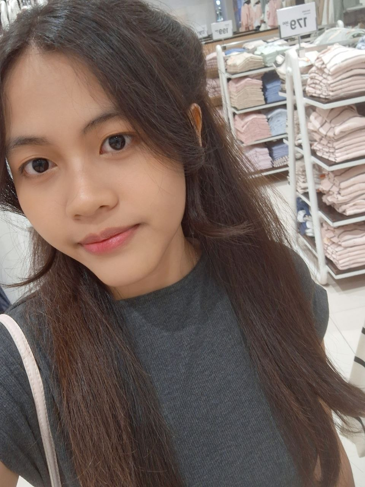

Armellia Salsabilla
Informatics - UPN Veteran Jakarta
Hello, COER! I’m Armellia, a student who enjoys web design and K-pop in equal measure. I fell for CORTIS in December 2025 and never looked back, so building a fan page for them felt like the perfect first project. I hope you find a new favorite song here too.
My CORTIS Favorites
- Bias
- Martin
- Favorite song
- REDRED
- Favorite album
- GREENGREEN
- Fan since
- December 2025
Interests and Skills
- HTML and CSS
- K-pop
- UI/UX Design
Contact
- Email armellia.salsabilla@gmail.com
- GitHub github.com/Salsaaax
- Instagram @armslsx_
- LinkedIn linkedin.com/in/armelia-s-8896a73ba